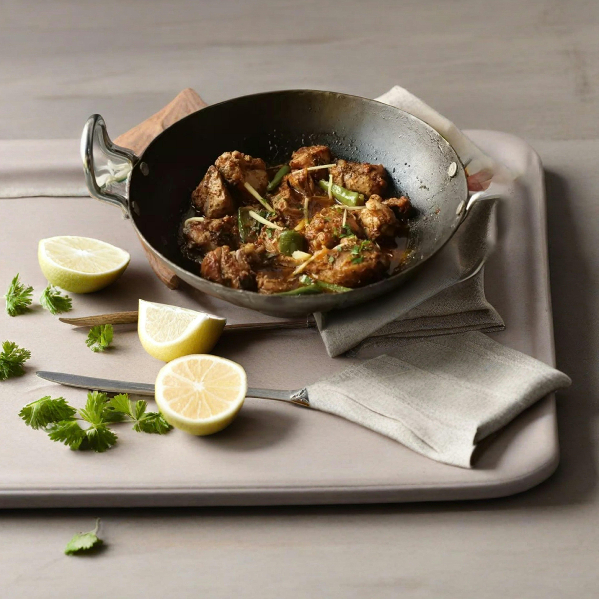

Mutton Karahi
Mutton karahi is a rich and hearty Pakistani dish known for its bold flavors and traditional cooking style. It is
prepared by cooking tender pieces of mutton in a wok-like pan called a karahi, along with tomatoes, ginger,
garlic, and a blend of aromatic spices. The slow cooking process allows the meat to become soft and juicy, while
the thick, spicy gravy enhances its taste, making it a popular choice for gatherings and special meals.
Go Back